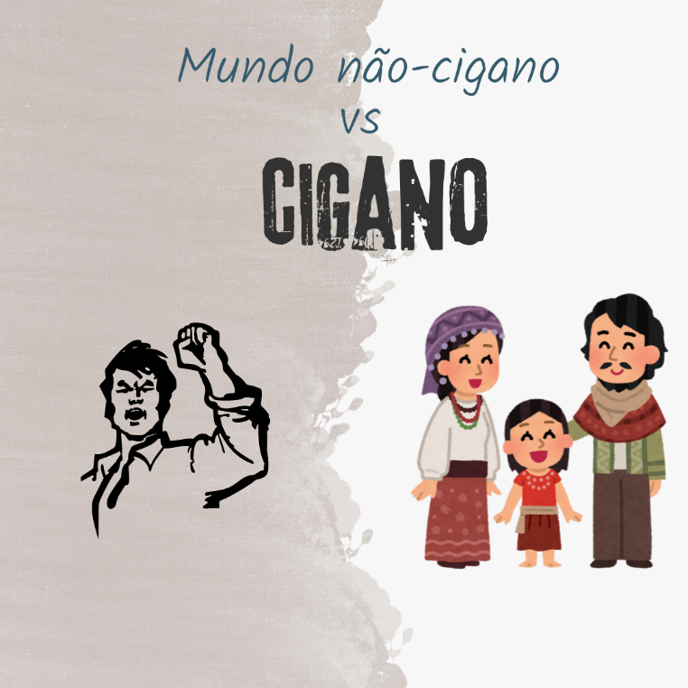
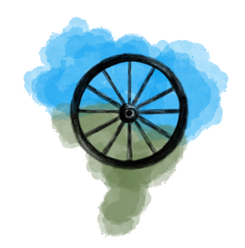

Assoreamento de recurso hídrico. Falta/irregularidade na demarcação de território tradicional.
Breve percurso de entrada
Iniciaremos essa aula com uma reflexão:
Você já atendeu uma pessoa cigana em sua prática profissional? Como percebeu a relação dela com território e saúde?
Mesmo antes do surgimento "científico" do conceito de raça no Iluminismo1, o estereótipo do cigano já revelava crenças racistas. Antes da palavra, a etnia já vivia na pele seus significados (SCHOLZ, 2014).
O imaginário popular criou uma figura de cigano que é bastante diferente da que existe na realidade. Fantasioso, injusto e abusivo. A sedução, as saias de sete metros, a habilidade de prever o futuro e a riqueza contida em dentes de ouro e joias são apenas algumas das características desse esforço para criar bodes expiatórios que têm durado anos e governos. Quem sequestra e espolia? São eles! Além disso, já temos um culpado que deve pagar pelos erros cometidos. Essas representações não são ingênuas: elas fazem parte de um processo histórico de marginalização, que transforma comunidades inteiras em bodes expiatórios para problemas sociais. O discurso estigmatizante aponta os ciganos como responsáveis por práticas negativas, como sequestro ou roubo, rotulando-os como “escória”. Dessa forma, cria-se um culpado coletivo, legitimando exclusão, violência e desigualdade.
Para os profissionais de saúde, é fundamental reconhecer como esses estigmas ainda afetam o acesso dessa população a serviços de cuidado e promoção da saúde. A desconstrução de preconceitos é um passo essencial para práticas mais inclusivas, equitativas e humanizadas.

1 O Iluminismo foi um movimento intelectual, cultural e político que surgiu na Europa do século XVII e XVIII. Ele recebeu esse nome porque defendia a “luz da razão” como forma de iluminar a sociedade, combatendo a “escuridão” da ignorância, do fanatismo religioso e das tradições consideradas irracionais.
Para evitar cairmos em túmulos históricos de crer que algumas coisas que passamos sempre foram assim, é fundamental trazer a subjetividade que sedimenta nossas vidas. Tudo é construído ao longo do tempo.
A imagem simbólica apresentada anteriormente ajuda a entender esse processo: a consolidação social de preconceitos, como o racismo e o anticiganismo (discriminação contra povos ciganos), que ainda hoje impacta o acesso dessa população a direitos básicos, incluindo saúde, educação e moradia.
Território é uma pactuação central de poder político hegemônico, sob esses moldes (HARVEY, 2013a) e povos ciganos se movimentam com uma perigosa “destreza” desterritorial. Pois a itinerância faz parte do sistema imunológico dessa diversidade. E ora, transitar exige um molde de territorialização singular e multifacetado. Camaleão por exigência (MACÊDO DE PAULA, 2023). Nesse contexto, é possível vislumbrar que esse modo de ser no mundo não é muito bem-vindo, em que tudo é cercado por muros e arames farpados, da lógica proprietária e sedentária de sobreviver dos não-ciganos. Uma estrada, em que “um organismo que não consegue buscar água para beber, uma medicina saudável; então come mais veneno, produzindo uma agricultura cada vez mais drogada [...] uma espécie de metástase do pensamento do branco sobre a Terra [que] é o maior engano” (KRENAK apud REVISTA CULT, 2019).
Esses indivíduos que supostamente e no imaginário social, não desejam trabalhar de forma oficial, o que querem afinal? Quem eles acham ser?
O que demonstra também uma forte conexão em uma sociedade dominada pelo trabalho formal. Além disso, ela propaga elementos que destoam do contexto geral e específico, revelando que não há interesse material na sua existência. Este módulo tem como objetivo colocar algumas questões sobre os grupos ciganos ou Roma2 no contexto das discussões geopolíticas e apresentar esses indivíduos ligados ao território de uma maneira única e exposta à violência e à destruição incessantes.
2 Roma é utilizado como referência de autonomeação da própria etnia – ainda que alguns grupos utilizem a terminologia universal “cigano” - conhecida pela hegemonia como cigana (HANCOCK, 2012).
Os povos ciganos, marcados pela itinerância e por formas singulares de territorialidade, desafiam a lógica fixa e proprietária da sociedade não cigana, mas por isso enfrentam estigmas, violência e exclusão.
Itinerância, impermanência e sedentarização
Leia o relato a seguir:
“Meu pai tem, meu sogro tem, porque eles compraram o terreno, mas a grande maioria das pessoas da comunidade não tem o documento, porque as terras elas foram doadas apenas de boca. Antigamente, como a cidade estava crescendo ainda pra outros lados, né, os grandes empresários ainda não tinham atentado pra construção para o lado de cá, até porque era uma comunidade cigana, a gente era tido como… ainda é tido como um pessoal muito difícil, é, um pessoal violento.” (FIGUEIREDO et al., 2022, p. 34).
Marcilânia, uma cigana de etnia Calon, em citação, imbrica povos ciganos e sua histórica problemática com a ótica do mundo não-cigano branco, em desacordo às formas de organização territorial de ciganos quando decidem permanecer em determinada localidade. Afinal, a definição de propriedade privada é baseada na necessidade de desfrute exclusivo (THOMPSON, 1998) e como resultado, as "conexões" econômicas que protegem e ocultam este processo legalizado colocam o domínio financeiro em conexão ao poder político. O quase desconhecido Brasil cigano...
Diferente da sociedade majoritária, que valoriza a propriedade privada, os ciganos possuem uma territorialidade itinerante: vivem em deslocamento, mantendo forte ligação com a natureza.
...está imbricado nesse emaranhado de disputas territoriais e de interesses internos de sujeitos hegemônicos no poder, em detrimento de outros, indivíduos racializados.
Como resultado dessa relação de movimento e dispersão, o território cigano também está em trânsito (MACÊDO DE PAULA, 2023). Essa dispersão, ou "a ideia da diáspora pode de certa forma, ser pensada em relação às populações ciganas, seja se tratando de representação e construção de identidades coletivas" (MEDEIROS; BATISTA, 2015, p. 204). Esta "territorialidade itinerante" (ALMEIDA, 2009) é muito adequada para a identidade da etnia.
Podemos associar o pecado com a itinerância, pois pessoas que mudavam frequentemente de lugar por qualquer razão eram consideradas pecadoras e, em seguida, eram descritas como criminosas no Brasil histórico e colonial. É estratégico trazer a sabedoria e epistemologia indígena, pois se trata de povos que também se encaixam em conceituações étnicas, como os ciganos. Além disso, foram submetidos aos desafios de serem membros de grupos racializados ao longo da história deste continente. Nessa estrada étnica, a moral e o poder cristão que ajudou e criou o Brasil também o condenou:
“Um dos primeiros pecados inventados pelos padres foi o pecado do nomadismo ('Cartas Jesuíticas, 1517-1570', do padre Manoel da Nóbrega). Para eles, era impossível catequizar um povo em movimento (...) O pecado do nomadismo é uma das inspirações religiosas da tese do marco temporal em julgamento no Supremo Tribunal Federal (...) Mas como exigir fixidez de povos que se caracterizam pela caminhada e movimento? Como perguntar quem é o 'verdadeiro dono' se entendemos que nós é que pertencemos à terra, somos a terra e que ela não é um produto?” (NUÑEZ, 2023)
Existe uma linha tênue entre a verdadeira liberdade atribuída aos ciganos e a vida nômade que resulta da expulsão ou exílio territorial. Ou seja, não pode ficar, mas também não pode passar.
A itinerância cigana, vista como “pecado do nomadismo”, foi historicamente usada para justificar exclusão e violência. Qual seria então o lugar dos ciganos?
Demarcando um território cigano
Leia com atenção a citação a seguir:
“(...) as possíveis faces da identidade romani: diaspórica, que remete a um passado longínquo de nomadismo, saído da Índia; um grupo caracterizado por uma cultura, estilo de vida e comportamentos próprios; um grupo, raça ou parentes biológicos; um grupo ligado pelo histórico de perseguições e sofrimentos de discriminação e hostilidades por parte das sociedades majoritárias; uma identidade étnico-cultural; e uma construção social originária da população marginalizada europeia que optou por um estilo de vida nômade na Idade Média e adquiriu traços étnicos.” (JÚNIOR; TOYANSK, 2020, p. 166).
A racionalidade hierárquica e dualista da quebra e divisão do mundo acaba com as comunidades que surgiram de uma relação mais simbiótica com o meio natural. Isso degrada a conexão tradicional e singela para consolidar a ordem dualista e ferramental (MACÊDO; FERREIRA, 2022). "A estrada, o pó e a família eram seus companheiros" (AZEVEDO, 2009, p. 17), diz-se sobre os ciganos, tanto no passado quanto no presente. A ideia de que a tradição cigana “foi estabelecida a partir de uma profunda interação com o meio ambiente, que se apresenta como um fator fundamental para a sua r-existência" (IDEM, p. 41), refere-se ao próprio reconhecimento histórico dessas demarcações epistemológicas. Essa profunda conexão é sempre lembrada em sua prática e "revela uma percepção menos utilitarista da natureza" (IDEM, p. 42). Um cigano sabe que precisa de um rio não poluído para que possa permanecer na estrada.
Assista ao filme Rio Cigano dirigido por Julia Zakia.
Essa identidade [cigana] desorganiza os conceitos de poder na hegemonia e tem características que não validam a tal "legitimidade", uma palavra perigosa porque envolve quem é considerado cidadão e quem tem direitos garantidos. Como referência para a reflexão, pode-se considerar a experiência dos povos indígenas e o reconhecimento de seus direitos territoriais, especialmente o direito à demarcação de terras. Embora esses direitos estejam previstos no ordenamento jurídico, sua efetivação pelo Estado historicamente enfrenta desafios e limitações. (LESSA; NUÑEZ, 2022, p. 46).
Além disso, entrar em contato com teorias nacionalistas forneceria informações adicionais sobre a questão da cidadania e de quem sistematicamente tem direito a ela e quem está sujeito ao direito de considerar-se um sujeito nacional e que pode ser chamado e reconhecido plenamente como cidadão (CASTELLS, 1999). Essa concepção de “legitimidade” pode ser problematizada a partir das experiências dos povos indígenas e ciganos. Persistem desafios relacionados ao reconhecimento e à efetivação de direitos, inclusive no que se refere aos direitos territoriais indígenas, apesar de sua previsão no ordenamento jurídico. Nesse contexto, é pertinente refletir sobre os fatores históricos, sociais e institucionais que contribuem para que determinados grupos étnicos enfrentem maiores obstáculos para a efetivação de direitos formalmente reconhecidos, bem como sobre as situações de vulnerabilidade que podem ocorrer mesmo após o reconhecimento desses direitos. Esse conflito que persiste entre a legitimidade pode ser considerado apenas ineficiência e isso levaria a um grande debate sobre o que realmente é eficaz ou se isso seria uma organização para que esses sejam os únicos métodos viáveis. Aqueles métodos que nunca incluíram outras cosmologias no mundo considerado universal. O que nos restaria perguntar:
Será que o direito legalizado à disposição de um território tradicional cigano seria respeitado pela composição desse Estado?
Esses são alguns dos desafios da multiplicidade cigana no Brasil. A identidade cigana questiona a legitimidade hegemônica, revelando como cidadania e direitos ainda são negados a povos étnico-racializados.
Território, rio, fogo e ar são o tecido da mesma complexidade
Leia a citação a seguir:
“É impossível tratar sobre a alma humana sem que isso cause um devaneio. É temeroso falar de fogo, sem que o brilho não ilumine ou ofusque os nossos olhos. Impossível falar de condição humana - de poesia -, que é múltipla e complexa, sem que isso não cause ambiguidade, negação, afirmação e r-existência. Imagina então falar da minha própria identidade cigana Kalon?” (AZEVEDO, 2009, p. 37)
Existem diversas maneiras diferentes de imaginar um país ou território. Se a falta de imaginação territorial objetiva uma lacuna, então a "falta de criatividade" é causada pela hegemonia, que se preocupa apenas com sua pretendida "ordem". Vejam, por exemplo, como os diferentes povos ciganos se organizam territorialmente, para aqueles que não acreditam que deva haver propriedade sobre a terra. É uma maneira completamente diferente de pertencer ao mundo (MACÊDO DE PAULA, 2023). Trata-se de um convite, conhecer realmente os povos ciganos, se amigar. Não existe somente um modo de viver, e pensar num território cigano, é se orientar no indicativo de que, provavelmente, “nós nascemos no ventre das mulheres, para viver no colo da Terra. Nós nascemos no ventre da Terra para viver no colo da ancestralidade” (BISPO, 2020).
Vão além das categorizações do padrão de vida no capitalismo, e as restrições à fé e à esperança de uma vida plena e dedicada ao que é bom para si e para os outros, que são perspectivas circulares como o fogo e cíclicas como a água (AZEVEDO, 2009, p. 135).
Não é preciso estar muito alheio à realidade e as notícias gerais do que acontece com a natureza no Brasil para saber da magnitude de seu saqueio e destruição. Essa é a lógica do pensamento do mundo considerado civilizado, em que a água e o território são apenas instrumentos que podem ser utilizados até se esvair. Só que esse mundo que dita as regras do jogo, destrói também os mundos de quem convive em confluência (BISPO, 2020). Ou seja, não há terra boa para assentar barraca, e nem água de rio para beber.
Para os povos ciganos, a vida vai além das categorias do capitalismo: é circular como o fogo e cíclica como a água — elementos que hoje sofrem com o saque e a destruição da lógica “civilizada”.
Essa forma de vida, ou melhor, essa tecnologia de permanência e vivência, também articula os critérios de marginalização impostos aos ciganos. Portanto, essa tecnologia de vivência será um problema se romper com a dominação majoritária e hegemônica dos territórios. São paralelos que defendem uma identidade diversa, em contraste com a hegemônica e a assimétrica. Além disso, seria intrigante examinar as tradições ciganas para aqueles que buscam um mundo livre de fronteiras (MACÊDO; FERREIRA, 2022).
A mobilidade é essencial para entender os ciganos, que se baseiam em uma conexão ancestral. Aqui, devemos pensar em um mundo grande e aberto em vez de um território fechado e com cercas. O espaço e os atores sociais formam o território, e neste caso, com base nos ciganos, falo de uma constituição muito particular porque a diversidade vem da diáspora e vice-versa. Como os contextos do mundo são diversos, as trajetórias dispersas acolhem a diversidade. Em vez de ter um território único, a diáspora conecta seus membros por linhas invisíveis (GUIMARAIS, 2012).
O art. 3º parágrafo II do Decreto nº 12.128, de 1º de agosto de 2024, prevê: “o respeito à autodeterminação, à integridade de moradia e de sua territorialidade, ainda que em condição de transitoriedade, à plena efetividade dos direitos sociais, econômicos e culturais dos povos ciganos, conforme o disposto no Artigo 2º da Convenção nº 169 da Organização Internacional do Trabalho.”
Além disso, quando se trata da questão da territorialidade dos povos ciganos e dos processos territoriais, uma ideia de que os atores citados estão constantemente sendo sugeridos na perspectiva de um lugar também percebido como espiritual. A hegemonia associa-os ao curandeirismo, adivinhação e predição do futuro, além de carregar uma aura quase mágica (SCHOLZ, 2014). No entanto, fora da área de mistério, o território cigano "diz respeito ao território como categoria de prática" (HAESBAERT, 2020a, p. 142).

Essa territorialidade é vista como uma parte diretamente ligada ao mundo natural e, de acordo com um padrão teórico específico, é vista como separada do mundo humano. Essa visão é um mecanismo colonial porque considera primitivo tudo o que não corresponde aos padrões da sociedade hegemônica e seu poder legitimador. A natureza avaliada apenas por aquilo que ela não tem (obscurantismo e exotização) não se relaciona com a vida na terra cigana. Esse é um exemplo da divisão tradicional do espaço colonial em "natureza/cultura, caos/civilidade" (BHABHA, 2005, p. 177).
Assista aqui ao Webinário - Direitos Humanos e Povos Ciganos no Brasil: resistência contra o preconceito, que teve como objetivo dar visibilidade às demandas e desafios dessas populações.
A condição de ciganidade, especialmente as condições geográficas dissimétricas influenciadas pela geografia, se depara com barreiras que impõem limitações ao exercício de direitos democráticos, como acesso à cultura, trabalho e mobilidade espacial. Os contextos político-geográficos de predisposição do território não favorecem a migração, principalmente para indivíduos racializados. Quanto mais uma comunidade se organiza de maneira diferente, como diáspora, rede, ancestral, tradicional, afetivo ou parental, mais está ameaçada de não ter direitos. É um paralelo infeliz (MACÊDO; FERREIRA, 2022).
A territorialidade cigana, ligada à natureza e à tradição, é constantemente deslegitimada pela visão hegemônica, criando barreiras que limitam direitos como cultura, trabalho e mobilidade.
Para mais uma vez demonstrar que não existe nada "dado" ou que é simplesmente assim porque sim, é útil demonstrar a relação entre instituições e manutenção da propriedade privada. Isso representa a declaração de quem se considera o sujeito universal do mundo. Assim como as perseguições históricas da supremacia racial, o racismo nem sempre existiu. Elas foram edificadas. De fato, esconder sua história é assumir um caráter teológico e esconder técnicas do progresso, ordem, neutralidade, legitimidade e moralidade. O território do Brasil cigano segue resistindo contra tudo isso.
Se chegou até esse momento do módulo, convido a conhecer outros mundos e outras tradições organizativas do território, e aqui, as ciganas.